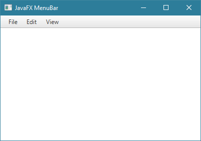
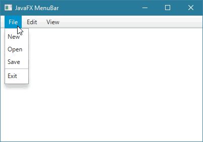
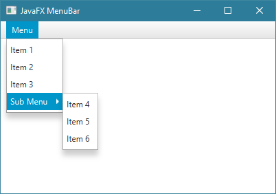

JavaFXالكلاس MenuBar
مقدمة
الكلاس MenuBar يستخدم لإضافة شريط القوائم ( Menu Bar ) في أعلا النافذة.
ملاحظة: الأشياء التي يمكنك وضعها في الـ MenuBar هي نفسها التي يمكنك وضعها في الـ ContextMenu.
إذاً, في الـ MenuBar يمكنك وضع أي نوع من العناصر ( Menu Items ) التالية بداخله:
Menu: أي قائمة عادية و تستطيع وضع قائمة بداخل قائمة.
MenuItem: عنصر عادي خاص للقوائم.
RadioMenuItem: يمثل RadioButton خاص للقوائم.
CheckMenuItem: يمثل CheckBox خاص للقوائم.
SeparatorMenuItem: يمثل خط فاصل (Separator) خاص للقوائم.
CustomMenuItem: عبارة عن كلاس خاص يجب أن يرث منه أي كلاس تنشئه أنت بهدف وضعه كعنصر في القائمة.
بناء الكلاس MenuBar
@DefaultProperty(value="menus")
public class MenuBar
extends Control
كونستركتورات الكلاس MenuBar
الجدول التالي يحتوي على كونستركتورات الكلاس MenuBar.
| الكونستركتور مع تعريفه |
public MenuBar()
ينشئ كائن من الكلاس MenuBar يمثل شريط قوائم فارغ. أي شريط قوائم لا يوجد فيه أي قائمة.
لإضافة قوائم فيها نستدعي الدالة getMenus() التي تسمح للوصول لعناصرها و من ثم نستدعي الدالة add() أو addAll() لإضافة قوائم فيها كالتالي.
menuBarObject.getMenus().add( menu );
menuBarObject.getMenus().addAll( menu1, menu2.. );
|
public MenuBar(Menu... menus)
ينشئ كائن من الكلاس MenuBar يمثل شريط قوائم يحتوي على قوائم.
مكان الباراميتر menus تمرر كائن أو مجموعة كائنات من الكلاس Menu مع وضع فاصلة بين كل كائنين. هذه الكائنات ستظهر كقوائم في شريط القوائم. |
دوال الكلاس MenuBar
الجدول التالي يحتوي على دوال الكلاس MenuBar الأكثر إستخداماً.
| الدالة مع تعريفها |
public final void setStyle(String value)
تستخدم لتعديل تصميم كائن الـ MenuBar الذي قام بإستدعائها.
مكان الباراميتر value يمكنك تمرير إسم و قيمة أي خاصية تريد تعديلها في كائن الـ MenuBar بأسلوب لغة CSS لإظهاره بالشكل الذي تريده. |
أمثلة شاملة
المثال الأول
المثال التالي يعلمك طريقة إضافة شريط القوائم MenuBar و إضافة قوائم Menu فيه.

شاهد المثال »
المثال الثاني
المثال التالي يعلمك طريقة إضافة عناصر ( Menu Items ) في كل قائمة و إضافة خط فاصل ( Separator ) بين العناصر.
ستتعلم أيضاً كيف تنفذ أوامر عند النقر على العناصر الموجودة في القوائم.

شاهد المثال »
المثال الثالث
المثال التالي يعلمك طريقة وضع أيقونات لعناصر القائمة. أي ستتعلم كيف تضع أيقونة للـ MenuItem.

شاهد المثال »
المثال الرابع
المثال التالي يعلمك طريقة إضافة CheckMenuItem و RadioMenuItem كعناصر في الـ Menu.

شاهد المثال »
المثال الخامس
المثال التالي يعلمك طريقة وضع القوائم بداخل بعضها البعض.

شاهد المثال »

 محرر الويب
محرر الويب نظام الألوان
نظام الألوان محول الوحدات
محول الوحدات محلل عناوين الشبكات
محلل عناوين الشبكات